- 2026-09-24🎯 Alignment pass: title hook now also asks what a reward on every question adds; grid heading names the skills exact state buys; score table gains a Δ R1 minus R0 row and an RL-track row; plan step 5 packages SpatialGym-Bench as an environment.
- 2026-09-24🏷️ Named: SpatialGym-100K (the dataset; 100K is the target size until the generator has run) and SpatialGym-Bench (the held-out twin test). Title hook: which spatial skills does exact simulator state buy that a million real photos cannot?
- 2026-09-24✂️ Redundancy merges applied: the Five tests table folded into the OUR benchmark table, the rivals table lost its "wall" column, Fixes rows 1 to 4 point at the grid.
- 2026-09-24🗂️ Page reorganized into three tabs: OURS novelty, Execution, Appendix; header rewritten as a problem statement.
- 2026-09-24🎮 The RL track of OUR benchmark ships in v0 (frozen-seed prompt generator plus checker reward).
- 2026-09-24📏 Trust in the sim test rests on the Spearman check of all arms against the five real tests; no real-photo anchor slice in v0.
- 2026-09-24🧪 Dataset plus benchmark: OUR held-out twin test is the second contribution, frozen before generation and scored once per release; 🅿️1 moves to category 2 on the category grid (lab notes, private).
- 2026-09-24🧾 Every arXiv ID in this plan was checked against the arXiv API; rival scoring facts come from rl_env_subjective_rewards.md (lab notes, private).
- 2026-09-21🥊 Six rivals, all non-RL-native; claims on pre-registered subsets; untrained reference rows kept apart (see Plan 01 (lab notes, private)).
- 2026-09-21🧾 Recipe R1 for every column: copy answers, then grade own tries (GRPO) with answer match plus format reward.
- 2026-09-21📄 Plan compacted; sibling project: Plan 03, humanoid benchmark plus dataset (lab notes, private).
SpatialGym-100K on SpatialGym-Bench: which spatial skills does exact simulator state buy that a million real photos cannot, and what does a reward on every question add?
- 🎥 The gap. Warehouse and smart-space cameras look down from 8 to 20 ft. Every public spatial training set looks from eye level, or asks four question types about stills with no people and no second view; none ships a reward interface for RL.
- 📉 The stakes. On the five public tests that ask these questions, the best models score 31 to 60 percent; humans reach 97 on MMSI.
- 🏭 The move. One simulator generator with exact answers and twin scenes trains a 3B model by grading its own tries and yields a held-out benchmark no model can memorize.
- 🎯 The bet, pre-registered. One frozen recipe, six rivals, five tests we do not own: on the subsets our cameras cover, our data beats every rival, and the gap between copying answers and grading tries (R1 minus R0) shows what a reward on every question adds. A hypothesis until the score table has numbers.
What each training set actually looks like, from verified samples only: 🗃️ rows pulled from the Hugging Face viewer API or the repos' own files and 📄 example figures from the arXiv HTML of each paper, each with its source. Nothing here is generated or described from memory; a dataset with no verified sample says so. Fetched 2026-09-25.
🥊 Warehouse-500K (NVIDIA) 🟦 Isaac Sim Replicator RGB-D warehouses, about 95k frames · about 500k QA · paper · card
🗃️ gated set, fetched with an access-approved account: 8 rows from train_sample (2 per category: left_right, mcq, distance, count); numbered region outlines are painted from the rows' own RLE masks in the order of the <mask> tokens (click 'original' for the untouched frame); PNGs re-encoded as JPEG for the page
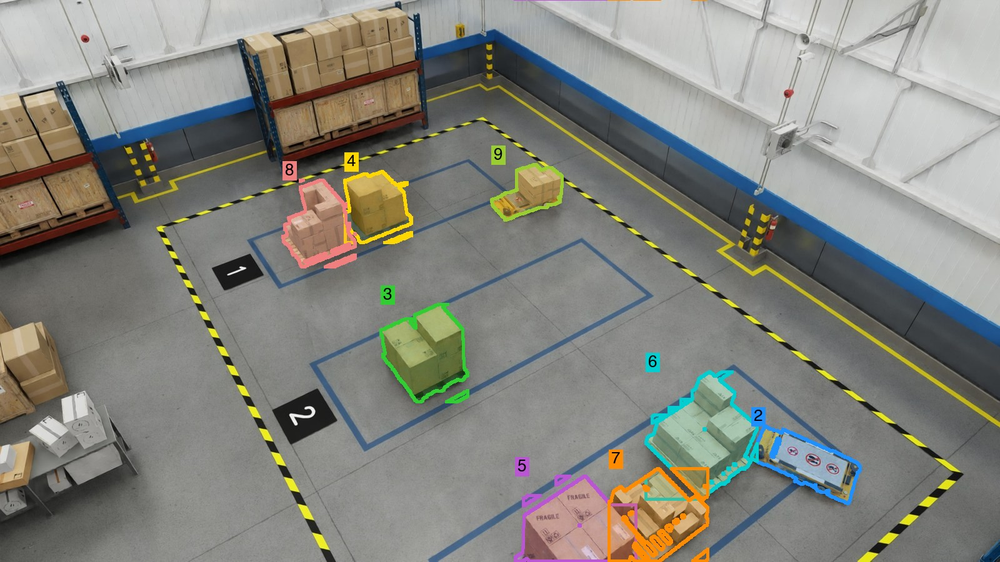
regions drawn · original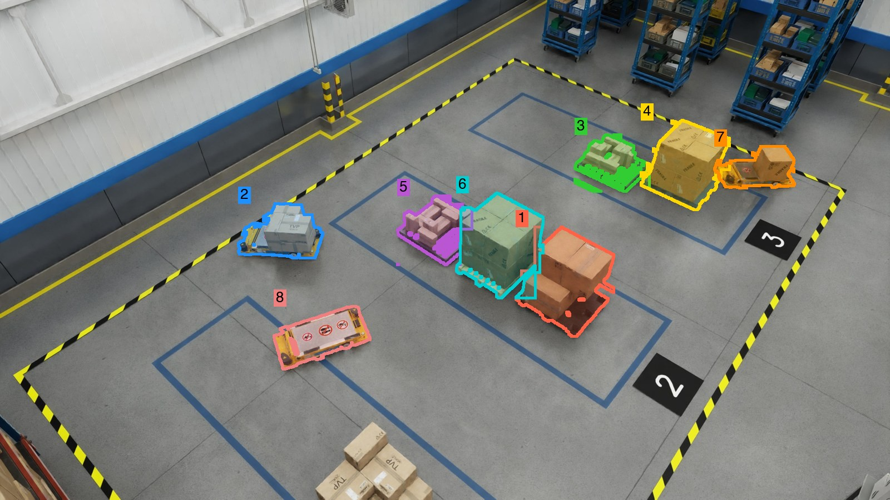
regions drawn · original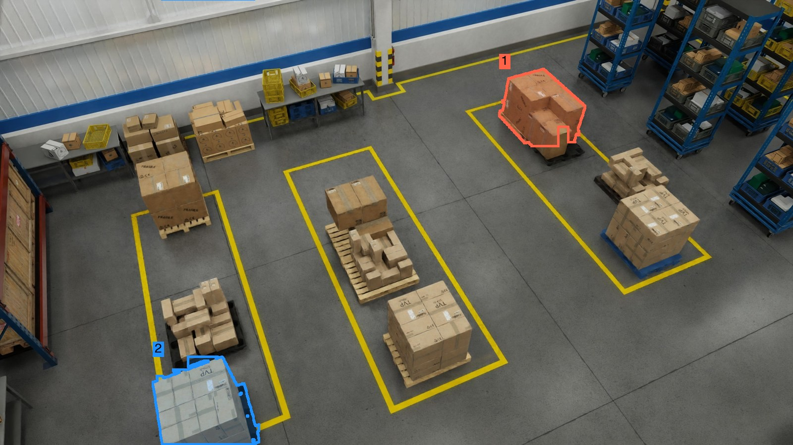
regions drawn · original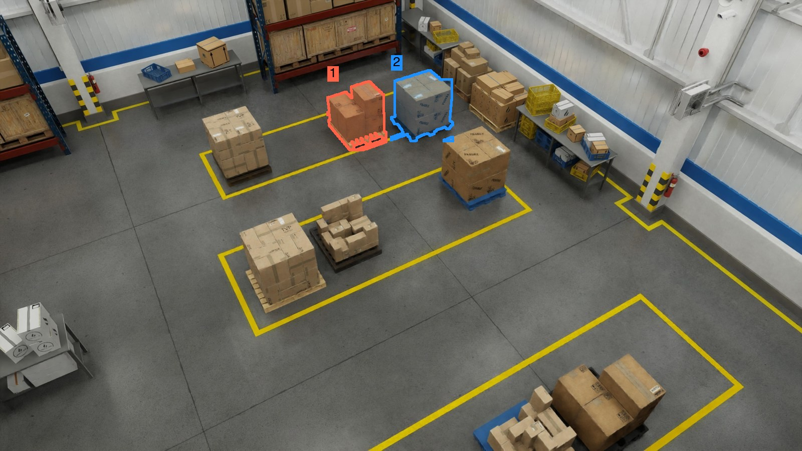
regions drawn · original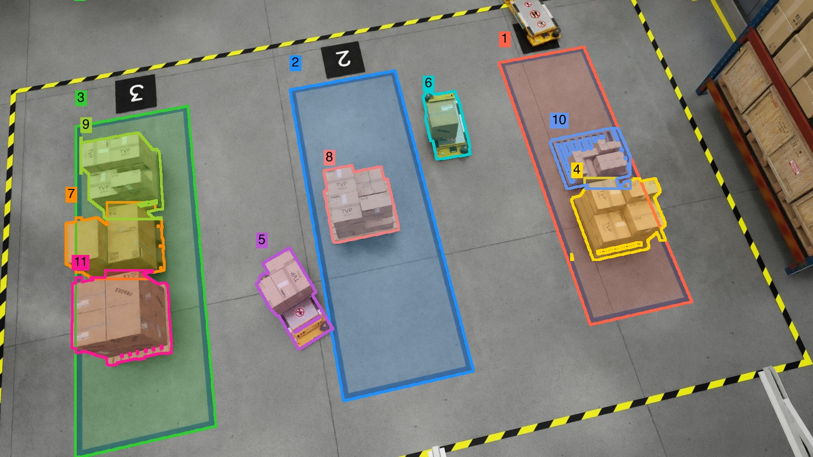
regions drawn · original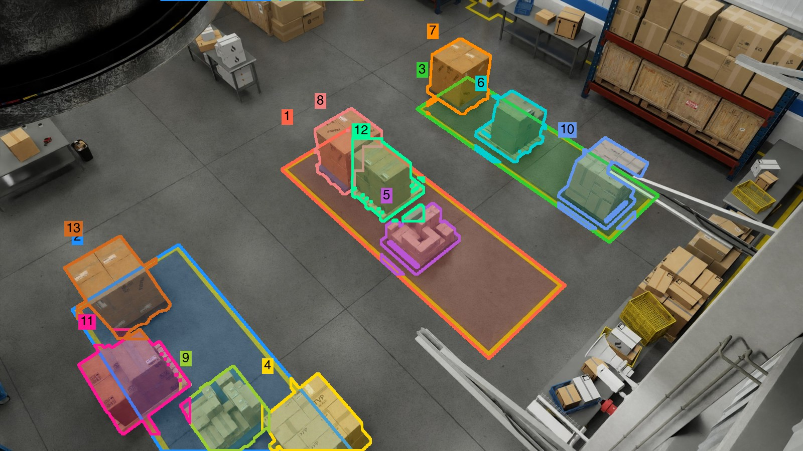
regions drawn · original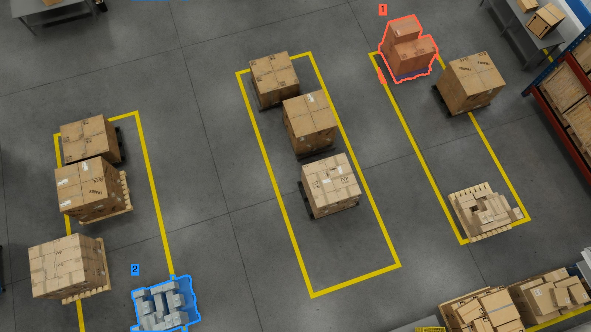
regions drawn · original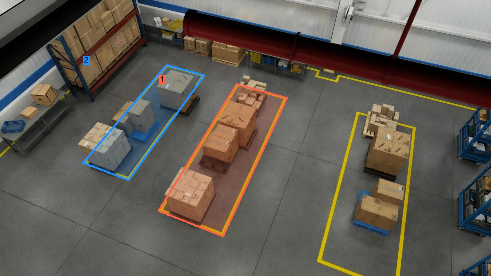
regions drawn · original🥊 SAT-175K 🟦 ProcTHOR, 22k apartments, eye level · 175k QA · paper · card
🗃️ rows from array/SAT-v2, the re-upload the SAT card itself recommends (the array/SAT viewer fails with HTTP 500); question_type is 'other' for static rows, kind inferred from wording

🥊 VSI-590K (Cambrian-S) 🟪 5 real scan sets, ProcTHOR walks, Hypersim, web tours · 590k QA · paper · card
🗃️ six frames extracted from robotics.tar.gz (the smallest archive, 1.1 GB); the other sources sit inside 3 to 90 GB archives, so those rows show the question and answer only; the paper filmstrips show their look
🥊 OSD-8.7M (SpatialRGPT) 🟩 OpenImages, 1M photos, 5M regions · 8.7M QA · paper · card
🗃️ the HF repo is annotation-only; photos fetched by id from the official Open Images bucket (image size matched each row's mask size); Region [0] and Region [1] outlines are painted from the rows' own RLE masks for the first question (click 'original' for the plain photo)
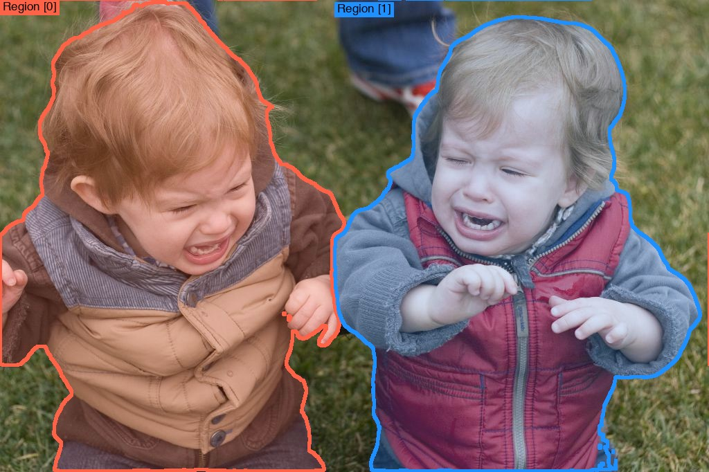
regions drawn · original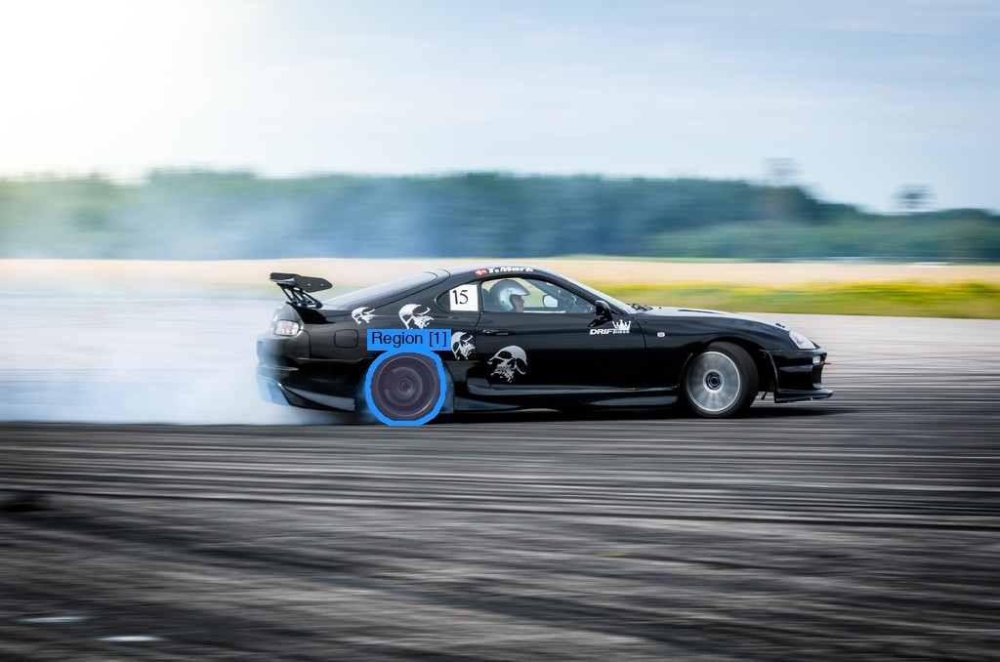
regions drawn · original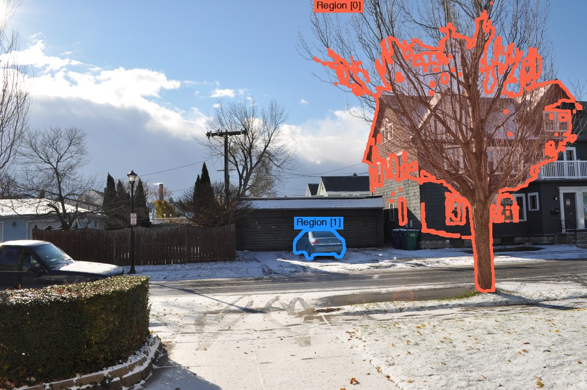
regions drawn · original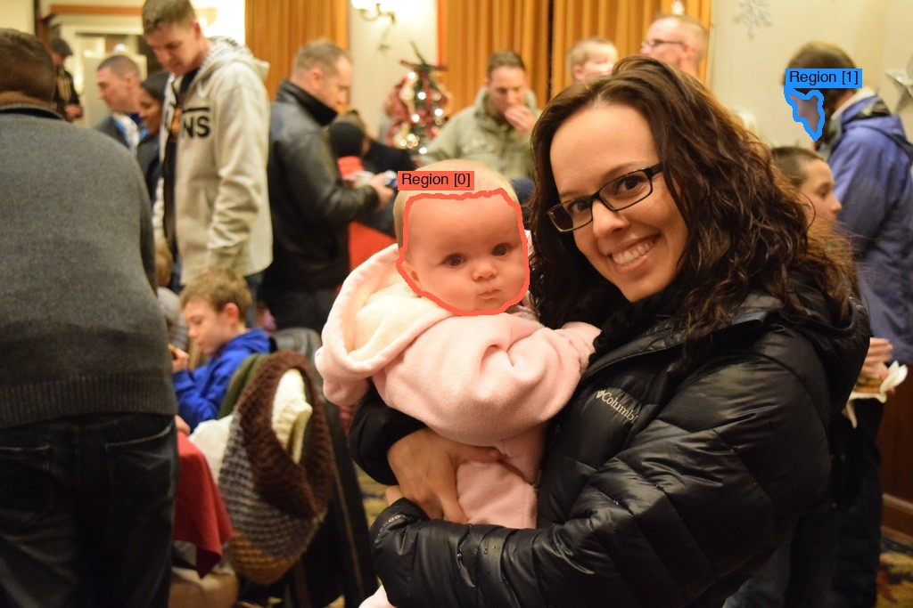
regions drawn · original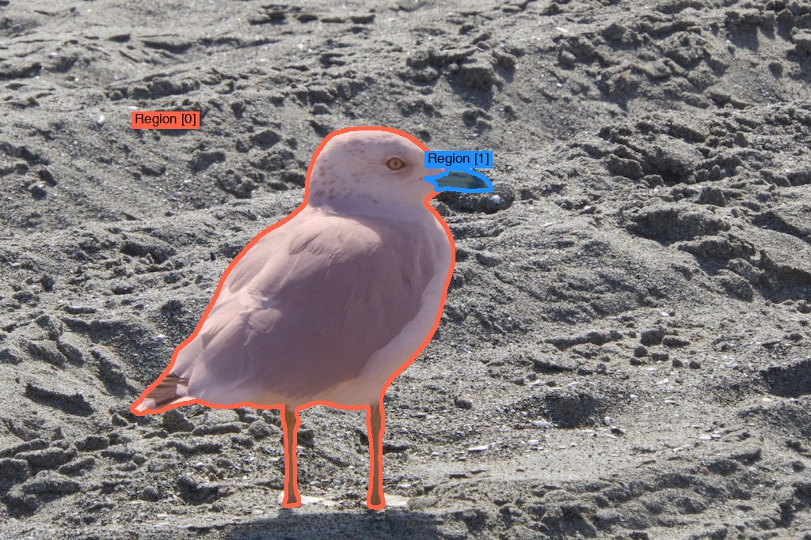
regions drawn · original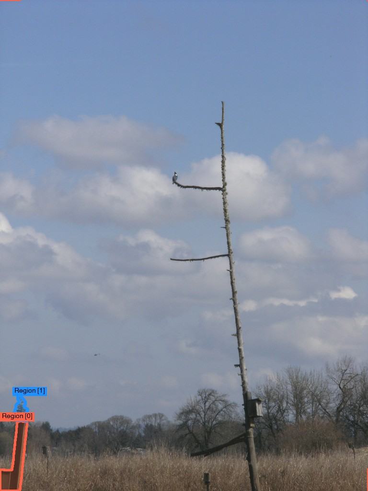
regions drawn · original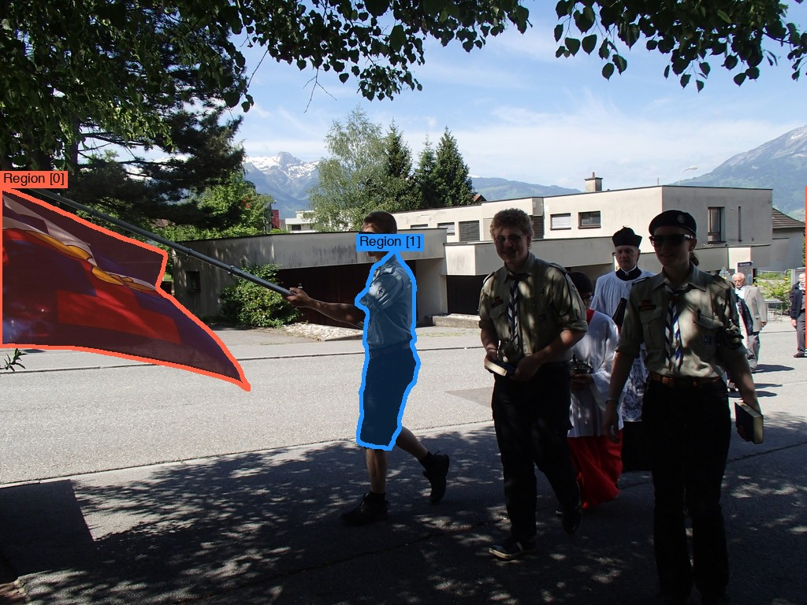
regions drawn · original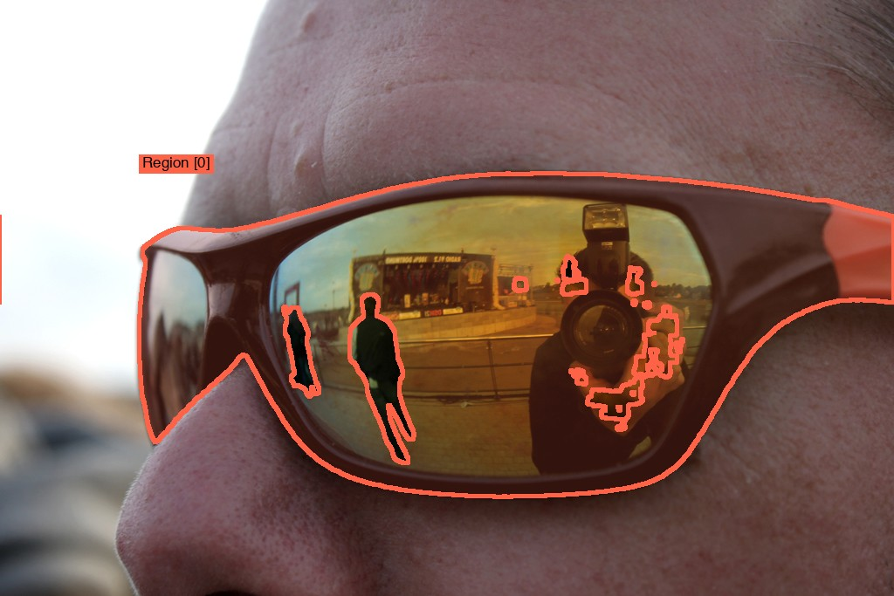
regions drawn · original🥊 SpatialQA-50K (SpatialBot) 🟩 COCO, Visual Genome, robot frames · about 50k images · paper · card
🗃️ gated set, fetched with an access-approved account: rows from the head of SpatialQA.json; 2d3ds and NYU Depth v2 images (with depth maps) pulled from the repo zips; low and middle level images live in the Bunny_695k data, so those two rows are text-only
🥊 RoboSpatial-1M 🟩 ScanNet, Matterport3D, 3RScan, HOPE, GraspNet scans · about 1M images, 3M QA · paper · card
🗃️ the 1M training set has no public repo (only the generator code); rows come from the RoboSpatial-Home benchmark, same question families
🏁 OURS: SpatialGym-100K (dataset) and SpatialGym-Bench (environment) 🟦 Isaac Sim, SimReady warehouses and smart spaces, fixed cameras · planned, nothing rendered yet
🧪 Test split, frozen before training: held-out camera levels 14 to 20 ft, scenes 41 to 50, asset set 2, twin types occlude and swap view, two-skill compositions (see the OUR Benchmark tab).
Provenance files: assets/qual/<rival>/provenance_rows.json, provenance_figs.json; reports: ROWS_REPORT.md, FIGS_REPORT.md in the same folder. Images are reproduced for research comparison; each dataset keeps its own licence.
🥊 Six rivals (all non-RL-native) and what they are made of; the wall each hits is in the grid
| 🏷️ rival | 🎥 pictures | 🧾 labels and questions | 📦 size, paper | 🎮 RL-ready? |
|---|---|---|---|---|
| 🥊 Warehouse-500K (NVIDIA) | 🟦 Isaac Sim Replicator RGB-D warehouses, ~95k frames |
✅ exact 3D; templates + Llama-3.1-70B; left/right, region pick, distance, count |
~500k QA, 2508.13564, card | ✅ checkable, ❌ pairs, ❌ traces, ❌ RL split |
| 🥊 SAT-175K | 🟦 ProcTHOR, 22k apartments, eye level |
✅ exact 3D; 2-way MCQ; static relation, depth, count; dynamic ego and object motion, perspective |
175k QA, 2412.07755, array/SAT | ✅ checkable, 🟡 correct-vs-distractor only |
| 🥊 VSI-590K (Cambrian-S) | 🟪 5 real scan sets + ProcTHOR walks + Hypersim + web tours |
🟡 3D scans where they exist, pseudo for web; 12 video types: count, distances, sizes, directions, order |
590k QA, 2511.04670, card | ✅ checkable, ❌ pairs, ❌ traces, ❌ RL split |
| 🥊 OSD-8.7M (SpatialRGPT) | 🟩 OpenImages, 1M photos, 5M regions |
🟡 guessed depth (Metric3Dv2), boxes, intrinsics; 8M templates + 700k LLM QA |
8.7M QA, 2406.01584, card | 🟡 template part checkable, LLM part not |
| 🥊 SpatialQA-50K (SpatialBot) | 🟩 COCO, Visual Genome, robot frames |
🟡 sensor or ZoeDepth depth; depth values, proximity, relations, counts |
~50k images, 2406.13642 | 🟡 checkable from estimated depth |
| 🥊 RoboSpatial-1M | 🟩 ScanNet, Matterport3D, 3RScan, HOPE, GraspNet scans |
✅ exact 3D boxes; yes/no configuration, empty-space points, fit; ego, world, object frames |
~1M images, 3M QA, 2411.16537 | ✅ checkable, ❌ pairs, ❌ traces, ❌ RL split |
Legend: 🎥 🟦 simulator / 🟪 sim + real / 🟩 real . 🧾 ✅ exact labels / 🟡 estimated or model-written . 🎮 what ships for grading tries. Excluded as RL-native or out of story, cited as untrained references: Cosmos-Reason1 (30,304 grading prompts, GRPO) [S15], SpaceR-151k [S16], SVQA-R1 [S17], MultiSPA-27M (94.7% on BLINK multi-view) [S20].
💡 What OURS adds for RL (the novelty, per algorithm)
| 🏷️ algorithm needs | 🧪 what rivals give | 💡 what OURS ships from exact simulator state |
|---|---|---|
| 🎯 GRPO / PPO: a checker per prompt | exact match on MCQ or a number | graded credit: distance and size within tolerance bands, direction within 1 bin, count off-by-n; step checks on a written chain (each claim tested against the 3D state) [S10][S14] |
| 🎯 GRPO / PPO: hard prompts | fixed difficulty | difficulty knobs logged per sample (occlusion %, object count, camera tilt, distance ratio) for curricula and pass-rate binning |
| 🔀 DPO: chosen vs rejected | none, or a random distractor | typed hard negatives: the rejected answer is the exact failure a model makes (mirror flip, wrong reference frame, off-by-one, occluded object counted), built from the twin scene, not edited by an LLM [S6][S18] |
| ⚖️ KTO: good or bad labels, unpaired | none | every model try labelled by the checker, plus the twin rule: an answer that does not flip when the scene flips is bad [S17] |
| 🔁 twin consistency reward | SVQA-R1 flips the picture in 2D [S17] | the object or camera moves in 3D, occlusion and depth change with it, so the reward cannot be gamed by symmetry |
| ⏱️ VANTAGE-style timing and tracking rewards | nothing checkable | event start/end from the event log, track IoU from per-frame poses: the two tasks where every model is weakest [S3] |
| ♾️ endless prompts | fixed files | a generator plus checkers, so RL never runs out of fresh prompts [Reasoning Gym style, 2505.24760] |
Legend: 🎯 policy-gradient methods / 🔀 pairwise / ⚖️ unpaired / 🔁 consistency / ⏱️ temporal / ♾️ procedural. Not novel on its own: grading tries [S13], view-consistency [S17], hard-negative DPO [S18]; the novelty is that all of these come for free and exact from one simulator state, for camera views no rival covers.
🧪 OUR benchmark, SpatialGym-Bench: the five real tests, what each asks and claims, against ours
| 🏷️ benchmark | ❓ asks, today's best, and 🏆 the claimed subset | 📏 how it scores | 🎮 RL environment | 🔁 twins, held-out design | 💡 what OURS adds against it |
|---|---|---|---|---|---|
| 📋 VANTAGE-Bench 2609.09396 | real fixed-camera video, 8 tasks (events, VQA, pointing, boxes, timing, captions, tracking); timing and tracking weakest, best under 56 mIoU. 🏆 claimed: 6 grounded tasks; captions and VQA reported | accuracy, macro F1, temporal mIoU, tracking AUC on a fixed set | ❌ none | ❌ no twins, fixed items | event start and end from the event log, tracks from per-frame poses, graded per item; endless fixed-camera prompts |
| 📋 ViewSpatial-Bench 2505.21500 | real photos with people; direction from the camera or a person's eyes, 18 bins, 5 tasks; 43k targeted items moved a 3B model +46. 🏆 claimed: human-perspective tasks | multiple-choice accuracy over 18 direction bins | ❌ none | ❌ none | people with exact body orientation; direction graded within 1 bin instead of right or wrong |
| 📋 MMSI-Bench 2505.23764 | 1,000 real multi-image MCQ, 11 types; best open about 31%, GPT-5 about 42%, humans 97%. 🏆 claimed: camera-camera, region, motion, multi-step | exact-match accuracy | ❌ none | ❌ none | posed multi-view sets; camera-camera and region-region relations computed from exact poses |
| 📋 3DSRBench 2412.07825 | real photos; height, location, orientation, multi-object; common vs uncommon views; flip test; best 60.3%. 🏆 claimed: orientation, multi-object, uncommon views | MCQ accuracy; CircularEval needs every pass right; FlipEval on mirrored images | ❌ none | 🟡 2D mirror flip only | 3D twins: the object or the camera moves, occlusion and depth change with it, so symmetry cannot game the score |
| 📋 OmniSpatial 2506.03135 | 8.4k real QA: perspective, dynamic, interaction, logic; models peak 57%. 🏆 claimed: perspective and dynamic groups | MCQ accuracy; GPT-4.1-mini grades free-form chains | ❌ none | ❌ none | perspective from any agent in the scene; motion twins with exact outcomes |
| 🏁 OURS, SpatialGym-Bench (held-out twin test) | Isaac Sim fixed cameras 8 to 20 ft; test = held-out levels 14 to 20 ft, scenes 41 to 50, asset set 2, about 5k items plus a generator | 🏁 held-out accuracy . 🔁 twin rate (both of a pair right AND the answer flips) . 📏 graded credit (tolerance bands, direction bins, count off-by-n) . 🎚️ pass rate per difficulty knob | ✅ the test IS an environment: frozen-seed prompt generator plus checker reward; fresh items on every call; RL-trained models are scored on prompts they never saw | ✅ 3D twins by construction; levels, scenes, twin types and compositions frozen before any training data exists | Spearman of all arms against the five real tests; at least 1,000 items per claimed subset, bootstrap CIs, train-test proximity report; lmms-eval task and leaderboard |
Legend: ❌ absent / 🟡 partial / ✅ built in / 🏆 claimed subset, pre-registered before scoring. Dev set for tuning, never these five: SAT synthetic val, a VSI-590K hold-out, SpatialRGPT-Bench, EmbSpatial-Bench. Rival facts from the scoring audit in rl_env_subjective_rewards.md (lab notes, private); design borrowed from GemBench compositions, COLOSSEUM levels, LIBERO-X difficulty, the benchmark audit and RoboLab's Spearman validation [S27] to [S31]. Home-game and sim-only limits: see the Limitations table; build order: plan steps 2, 4 and 5.
🔁 Which skills exact state buys: how each rival could beat OURS on each test, and why it cannot
Read each cell as "their best shot, then the wall they hit". A cell marked 🟡 is a real contest; the claim there is on the named subset only.
| 🏷️ rival | 📋 VANTAGE (8 tasks) | 📋 ViewSpatial (5 tasks) | 📋 MMSI (11 types) | 📋 3DSRBench (12 types) | 📋 OmniSpatial (4 groups) |
|---|---|---|---|---|---|
| 🥊 Warehouse-500K | 🟡 shot: elevated stills with masks help pointing and boxes; wall: no video, so 5 of 8 tasks (timing, tracking, captions, events, video QA) have zero coverage |
✅ wall: no perspective questions, no people |
✅ wall: single image, no cross-view relations |
✅ wall: 4 question kinds, no orientation, no multi-object |
✅ wall: no perspective, no motion |
| 🥊 SAT-175K | ✅ wall: eye-level homes, no fixed cameras, no video, 2-way MCQ |
🟡 shot: 6k allocentric items; wall: no people, so the 3 human-perspective tasks are uncovered, and 6k vs the 43k that moved this test 46 points [S21] |
🟡 shot: 14k two-image dynamic items (ego and object motion); wall: no camera-camera or region-region relations across 3+ views |
🟡 shot: relations, depth, count on ProcTHOR; wall: only "common" viewpoints, no orientation types; FlipEval punishes its left/right habit |
🟡 shot: dynamic and perspective items exist; wall: lower fidelity, 2-way MCQ, no hypothetical-perspective or interaction items |
| 🥊 VSI-590K | 🟡 shot: real video, appearance-order items; wall: eye-level walks, no fixed cameras, no timing or tracking outputs |
🟡 shot: "standing at A facing B, where is C" items; wall: no people, so human-perspective tasks are uncovered |
🟡 shot: real ScanNet frames match MMSI sources; wall: its 12 types are counts, distances, sizes, order, not camera-camera or region-region relations |
✅ wall: video question types, no single-image orientation or height |
🟡 shot: relative-direction items; wall: no dynamic motion, no interaction, no logic items |
| 🥊 OSD-8.7M | 🟡 shot: real photos with region prompts help referring and localization on real footage; wall: no video, no timing, wrong camera height |
✅ wall: single view, no perspective questions, no orientation labels |
✅ wall: single image | 🟡 shot: real COCO-like photos, vertical and depth distances cover location and height (4 of 12 types); wall: axis-aligned boxes give no orientation (3 types), no multi-object 3D (5 types), guessed depth |
✅ wall: static single-image relations only |
| 🥊 SpatialQA-50K | ✅ wall: single images, depth-centric |
✅ wall: no perspective | ✅ wall: single image | 🟡 shot: COCO images with depth cover location types; wall: estimated depth (ZoeDepth), no orientation, no multi-object |
✅ wall: no perspective, no motion |
| 🥊 RoboSpatial-1M | ✅ wall: egocentric indoor and tabletop stills, no video, no fixed cameras |
🟡 shot: object-centric frame questions train direction from an object's view; wall: no people, so the 3 human-perspective tasks are uncovered, and yes/no answers vs 18 direction bins |
✅ wall: single egocentric image |
🟡 shot: 3D boxes and object frames cover orientation and location; wall: pairwise questions only, no multi-object 3+, common viewpoints only |
🟡 shot: object-centric perspective; wall: no dynamic, no interaction, no logic |
Legend: ✅ structural win (the rival has no data for the skill) / 🟡 contest on part of the test (claim on the named subset only). Sources: [S1][S2][S3][S8][S19][S21][S22][S23][S24].
Why a missing skill cannot be recovered by the rival's other data (the margin theory): targeted data moves these tests by 20 to 46 points, and no other data moves them. ViewSpatial: 43k auto items gave +46 [S21]. BLINK multi-view: 27M multi-frame items gave +26.4 to 94.7% [S20]. CV-Bench: 127k static items gave +23.9, while VSI-Bench moved only +3.8 from the same data [S1]. Spatial-DISE: 8.6k items gave +21 [S24]. So a rival with zero items of a skill stays near the base model on that skill, and OURS, generating that skill exactly, wins by roughly the size of those published jumps. Where a rival has partial data (🟡 cells), the margin shrinks to the uncovered subset, which is why every 🟡 cell names it.
🏁 Score table skeleton (same layout as the sample image)
Recipe R1 for every column: copy answers, then grade own tries with exact match (see Plan 01 (lab notes, private)). Subset rows carry the claim; whole-test rows are reported.
| group | benchmark, metrics one per line | 🏁 OURS | 🥊 Warehouse-500K | 🥊 SAT-175K | 🥊 VSI-590K | 🥊 OSD-8.7M | 🥊 SpatialQA-50K | 🥊 RoboSpatial-1M |
|---|---|---|---|---|---|---|---|---|
| Claimed, Qwen2.5-VL-3B, R1 | VANTAGE-Bench: 6 grounded tasks, aggregate | n/a | n/a | n/a | n/a | n/a | n/a | n/a |
| ViewSpatial: human-perspective acc, overall acc | n/a | n/a | n/a | n/a | n/a | n/a | n/a | |
| MMSI: camera-camera, region, motion, multi-step acc; overall |
n/a | n/a | n/a | n/a | n/a | n/a | n/a | |
| 3DSRBench: orientation, multi-object, uncommon-view acc; overall |
n/a | n/a | n/a | n/a | n/a | n/a | n/a | |
| OmniSpatial: perspective, dynamic acc; overall | n/a | n/a | n/a | n/a | n/a | n/a | n/a | |
| Own test, held-out (home game, second contribution) | SpatialGym-Bench: held-out-level acc, twin rate, graded score |
n/a | n/a | n/a | n/a | n/a | n/a | n/a |
| SpatialGym-Bench RL track: pass rate on fresh prompts, twin rate |
n/a | n/a | n/a | n/a | n/a | n/a | n/a | |
| Value of the reward | Δ R1 minus R0 per column: grading tries minus copying answers, on the claimed subsets |
n/a | n/a | n/a | n/a | n/a | n/a | n/a |
| Transfer checks, no claim | CV-Bench: 2D acc, 3D acc | n/a | n/a | n/a | n/a | n/a | n/a | n/a |
| BLINK spatial: acc | n/a | n/a | n/a | n/a | n/a | n/a | n/a | |
| Controls | base model, zero-shot | n/a | ||||||
| R0 copy-only | n/a | n/a | n/a | n/a | n/a | n/a | n/a | |
| References, not trained here | MultiSPA-27M, SpaceR-151k, Cosmos-Reason1 (published numbers where they exist) |
Legend: 🏁 OURS / 🥊 rival. Bold the best per row among trained arms once numbers land. Compute (public recipes, not measured): a copy stage over 100k QA is a few hours on one 24 GB GPU; the grading stage roughly doubles it; the eight tests take one to three hours per checkpoint; seven checkpoints in total. Spearman of the SpatialGym-Bench column ranks against the five real tests is reported under the table; the Δ row is the number that shows what the reward buys, and it is reported for every column so the recipe stays fair.
🏭 Data generation pipeline
ASSETS SCENE + CAMERA RENDER (Isaac Sim / Replicator)
+-------------------------+ +-----------------------------+ +-------------------------------+
| SimReady USD warehouses | | Replicator Object + Agent: | | RGB, depth, seg masks, 3D |
| (notes_01.md, TA tier) |---->| layout, lighting, workers, |---->| boxes, camera pose, per-frame |
| DigitalCousin objects | | forklifts, event scripts | | object poses, EVENT LOG |
| other: ProcTHOR, | | camera sampler: height 8-20 | | (fall, near-miss, entry) |
| SceneSmith, Blender | | ft, tilt 30-60 deg | +---------------+---------------+
+-------------------------+ +-----------------------------+ |
v
TWINS VERIFIER BANK (from exact state) QUESTIONS
+-------------------------+ +-----------------------------+ +-------------------------------+
| same scene, ONE change: | | relation (left/right/behind)| | templates per skill of the 5 |
| move object, move |---->| count, depth order |---->| tests; twin question pairs; |
| camera, remove object, | | distance with tolerance | | multi-view sets (MMSI style) |
| occlude, swap view | | bands, direction (18 bins) | | perspective questions |
+-------------------------+ | event start/end, track IoU | +---------------+---------------+
| step checks for a written | |
| reasoning chain | v
+-----------------------------+ OPTIONAL POLISH
+-------------------------------+
OUTPUTS (one generator run) | wording: closed API (GPT, |
+-------------------------+ | Gemini, Claude) or open LLM; |
| SFT triples | | answers never touched |
| GRPO prompts + checker |<----------------------------------------| looks: Cosmos-Transfer for |
| DPO typed pairs | | photoreal style (open weights)|
| KTO good/bad labels | | real anchor: small real slice |
| dev split (sim) | | for ablation only |
+-------------------------+ +-------------------------------+
| TEST split (frozen 1st):|
| held-out levels, scenes,| never rendered for train; twin pairs, graded checkers,
| twin types, compositions| difficulty bins, RL env (see "OUR benchmark")
+-------------------------+
Three ways to run it: (1) NVIDIA stack only: Isaac Sim with Replicator on the SimReady assets, Cosmos-Transfer for looks; (2) closed APIs only for wording and, if licences allow, image or video generation (Veo, GPT image) for appearance variety, never for labels; (3) other simulators: ProcTHOR or SceneSmith for indoor variety, Blender for custom rigs. Labels always come from the simulator state, so the checkers stay exact whichever path renders the pixels.
🔄 The improvement loop: from the score table to "OURS beats every rival", by autoresearch
Karpathy's autoresearch gives an agent one editable file (train.py), a fixed 5-minute budget per experiment, one metric (val_bpb), a keep-or-discard rule, and a human-edited program.md; about 100 experiments run overnight [S26]. Our port keeps those four ideas and moves the editable file from the recipe to the data, because the recipe is frozen and shared with the rivals.
+----------------------------------------------------------------------+
| program.md (owner edits): goal, levers, dev metric, budget, stop rule,|
| the five claimed subsets written down BEFORE any test score |
+-----------------------------------+----------------------------------+
|
5 x 7 score table under R1 v gen_config.yaml (the ONE file the agent edits)
rows = 5 tests, cols = OURS + 6 rivals --gap per cell--> PROPOSER --edit--> skill mix, camera prior, twin ratio,
(whole test AND claimed subset) | (agent) tolerance bands, difficulty knobs,
| scene assets, question templates
v
GENERATE a 50k probe (fixed budget, CPU render + checkers)
|
v
TRAIN the probe under R1 with FIXED steps (same recipe as the table)
|
v
SCORE on DEV only: SAT val, VSI-590K hold-out, SpatialRGPT-Bench,
EmbSpatial-Bench, a sim DEV slice (never the five tests, never OUR TEST)
|
+-----------------+------------------+
| better on the gap cells, paired CI |-- no --> discard, run the diagnose loop
| excluding zero? | (research-direction), log.jsonl,
+-----------------+------------------+ next proposal
| yes: keep; incumbent := probe
v
SELF-TARGETING [RSI]: the incumbent's FAILED dev items -> their factor values
(camera tilt, distance band, count, view pair, person orientation) -> the generator
oversamples exactly those factors in the next probe; the checkers grade the new items
|
v
every K keeps: one full run, then the five TESTS and OUR TEST scored ONCE per release
STOP when OURS beats every rival on the five claimed subsets with CI,
or when two nights keep nothing: then the loop is dead weight, and the plan says so
| 🏷️ autoresearch | 🔁 our port | why |
|---|---|---|
🧾 train.py, the one file the agent edits |
gen_config.yaml: skill mix, camera prior, twin ratio, tolerance bands, difficulty knobs, assets, templates |
levers live in the data; the recipe never moves for OURS alone |
| ⏱️ 5 minutes per experiment | one 50k probe plus a fixed-step R1 run | steps, not minutes, so a preempted probe still compares |
📏 val_bpb |
dev accuracy on the gap cells, paired bootstrap CI over dev items | one number per probe; the test set is scored once per release |
| ✅ keep or discard | keep only if the CI excludes zero on the gap cells; otherwise diagnose before the next edit | the diagnose step is what autoresearch lacks |
📝 program.md edited by the human |
program.md with the pre-registered subset claims and the stop rule |
the owner tunes the org code, not the yaml |
| 🌙 about 100 runs overnight | as many probes as one GPU allows; a proposer model reads log.md between probes |
no human at 3 a.m. |
Legend: 🧾 editable file / ⏱️ budget / 📏 metric / ✅ verdict / 📝 human role / 🌙 cadence. What makes it recursive: the trained checkpoint chooses what the generator renders next, through its own dev failures, and the checkers built from the simulator state grade those new items without a human. The loop can end with "OURS cannot beat rival X on subset Y"; that result is written into the limitations, not hidden.
🧾 Recipe
Base model Qwen2.5-VL-3B-Instruct (2502.13923), LoRA rank 64, alpha 128, learning rate 1e-4, fixed step budget, one prompt template for all datasets, scored through lmms-eval (2407.12772). Recipe R1 (Plan 01 (lab notes, private)): copy answers, then grade the model's own tries with answer match plus format reward [GRPO, 2402.03300]. Published spatial work uses this setting and reaches about 42% on VSI-Bench after copying, which leaves headroom.
🗺️ Six-step plan, cheapest first
- Measure the gap before generating: run recipe R1 on the six rivals and score them; owner file: the score table above (about four GPU-days with the grading stage).
- Write the skill list as a spec and freeze the test split (held-out levels, scenes, twin types, compositions) before any training data exists; owner files
d01/literature/area_a_skill_spec.mdandpapers/p01-spatial-vqa/eval/test_spec.md(to be created, no GPU). - Build the camera prior from VANTAGE-Bench and Warehouse-500K metadata; script
d01/generate/camera_prior.py(to be created, CPU). - Generate the frozen SpatialGym-Bench split (about 5k items, twins included) and then a 50k SpatialGym train pilot with twins, posed multi-view sets and checkers from the warehouse and smart-space USD assets listed in notes_01.md (lab notes, private) (TA tier); train R1 once, score on the dev set only; start the loop above with
program.mdandgen_config.yaml(to be created). - Package SpatialGym-Bench as an environment:
reset(seed)returns a fresh image set and question,step(answer)returns graded credit from the checker plus the twin verdict, frozen seeds for the leaderboard; run one RL-trained arm through it; owner filepapers/p01-spatial-vqa/eval/spatialgym_env.py(to be created). - Add the map-then-answer variant, DPO typed pairs and timing checkers as ablations; ship the lmms-eval task and leaderboard; score the five tests and SpatialGym-Bench once per release, never inside the loop.
⛔ Limitations: tests we do not claim, and why
| 🏷️ test | 🥇 who holds it | ⛔ reason |
|---|---|---|
| 📋 CV-Bench, BLINK spatial | SAT, OSD | every skill they ask is already trained by SAT (+23.9 on CV-Bench) and OSD (real photos); tie at best; BLINK subsets are 120 to 143 items, too small for a margin; reported as transfer checks |
| 📋 VSI-Bench | VSI-590K | real scans of the same room families, walked on video; reported gain over 30 points [S2] |
| 📋 PhysBench | Cosmos-Reason1 | half the test needs mass, density, friction knowledge a renderer cannot give [S12] |
| 📋 PAI-Bench-U, Spatial-DISE, SAT-Real, AI City Track 3, SpatialRGPT-Bench | Cosmos, Spatial-DISE-12K, SAT, Warehouse, OSD | each is a rival's own domain or test set; dev signals only [S24][S25] |
| 📋 MMSI driving and hand-object images; VANTAGE captions and VQA | VSI-590K's web robot video; any real-video rival | looks we do not render; language-scored captions; whole-test numbers reported, not claimed |
| 🧪 MultiSPA-27M as a rival | prior art [S20] | would win MMSI-style tests; cited as a reference row, not trained |
| 🧪 SpatialGym-Bench, OUR twin test | OURS, home game | sim-only and built by the same generator; held-out levels only; never the headline; trust rests on the Spearman check against the five real tests, no real-photo anchor slice in v0 (decided 2026-09-24); RL track ships in v0 |
General limits to state: sim-to-real drops of 20 to 50 points are documented for contact, sensor noise and unscripted human behaviour; closed-API rewording adds licence terms; twins reduce but do not remove language-habit shortcuts; subset claims must be written down before any test score is run.
🔧 Failure causes and fixes (data side only; the recipe stays shared)
| # | failure cause | why it bites us | fix | in our plan |
|---|---|---|---|---|
| 1️⃣ | 🟥 skill gaps [S1][S2] | each rival covers 1 or 2 tests; an absent skill barely transfers |
generate the union of the 5 skill lists from one scene set |
✅ core, see the grid |
| 2️⃣ | 🟥 wrong camera [S3] | rivals are eye level; VANTAGE is 8 to 20 ft, 30 to 60 deg |
sample cameras from the VANTAGE prior [S3][S4] |
✅ core, see the grid |
| 3️⃣ | 🟨 word shortcuts [S5][S6] | left/right answered from language habits | twin renders: one change, flipped answer [S6][S7] |
✅ core, see RL novelty |
| 4️⃣ | 🟨 estimated labels [S8][S9] | OSD distances come from a depth guesser | exact metric answers with tolerance bands | ✅ core, see RL novelty |
| 5️⃣ | 🟨 answer-only training: no rival teaches the map in between [S10][S11] |
VSI-Bench: word-by-word thinking hurts, an explicit map helps ~10% [S10]; Map2Thought +5.3 at 10% data [S11] |
emit a small metric map, then the answer; the map is free from the simulator |
🟡 ablation |
| 6️⃣ | 🟩 physics without outcomes: Cosmos answers are model-written, not measured [S12] |
PhysBench dynamics asks what happens next |
physics-engine clips with measured outcomes (falls, collisions, stacks) |
🟡 dynamics only |
| 7️⃣ | ⬜ recipe lever: graded tries on checkable answers generalize better than copying answers [S13][S14] |
applies to every column equally | optional stage 2 for ALL arms; OURS gains only through denser checkable targets |
⏸️ later, all arms |
Legend: 🟥 high / 🟨 medium / 🟩 low expected effect . ✅ core / 🟡 ablation / ⏸️ parked
Rejected before recommending: any change that touches only OURS's recipe (row 7 is applied to every arm or not at all); any tuning on the five test benchmarks (use SAT synthetic val, a VSI-590K holdout and SpatialRGPT-Bench as the dev set); adding a rival's labels to OURS (its photos may be inputs, its answers never targets).
📚 Sources
- [S1] SAT: Dynamic Spatial Aptitude Training, arXiv 2412.07755: ProcTHOR generation, 175k QA, gains on CV-Bench (+23.9), BLINK (+7.4), VSI-Bench (+3.8).
- [S2] Cambrian-S / VSI-590K, arXiv 2511.04670 and the dataset card: 10 sources, ProcTHOR and Hypersim among them, >30 point gain on VSI-Bench.
- [S3] VANTAGE-Bench, arXiv 2609.09396: camera geometry, 8 tasks, 80% real, temporal tasks weakest.
- [S4] Domain randomization, Tobin et al. 2017, arXiv 1703.06907.
- [S5] What's "up" with vision-language models, arXiv 2310.19785: language habits drive left/right errors.
- [S6] Counterfactually-augmented data, Kaushik et al. 2019, arXiv 1909.12434: minimal pairs teach the difference that matters.
- [S7] Counterfactual sets for compositional reasoning, arXiv 2507.04699; synthetic minimal-pair video benchmark, arXiv 2601.15780.
- [S8] SpatialRGPT / Open Spatial Dataset, arXiv 2406.01584: Metric3Dv2 depth, WildCamera intrinsics, axis-aligned box limitation.
- [S9] SmolRGPT, arXiv 2509.15490: OSD + Warehouse-500K training, 90.68 on Track 3, weak width and height.
- [S10] Thinking in Space / VSI-Bench, arXiv 2412.14171: 71% spatial errors, CoT hurts, cognitive maps help.
- [S11] Map2Thought, arXiv 2601.11442: metric cognitive maps, +5.3 / +4.8 / +4.0 at 10 / 25 / 50% data on VSI-Bench.
- [S12] Cosmos-Reason1, arXiv 2503.15558: SFT data composition and DeepSeek-R1 traces; PhysBench, arXiv 2501.16411: failure analysis.
- [S13] SFT Memorizes, RL Generalizes, arXiv 2501.17161.
- [S14] Smooth verifiable reward for spatial numbers, arXiv 2601.07695; reward design for physical reasoning, arXiv 2604.13993.
- Also read: CV-Bench in Cambrian-1, arXiv 2406.16860; BLINK, arXiv 2404.12390; 9th AI City Challenge, arXiv 2508.13564; Warehouse-500K card.
- [S15] Cosmos-Reason1 RL stage (Table 5): 30,304 prompts, exact-match and format rewards, GRPO, no preference pairs, arXiv 2503.15558.
- [S16] SpaceR: Reinforcing MLLMs in Video Spatial Reasoning, arXiv 2504.01805: SpaceR-151k, spatially guided GRPO.
- [S17] SVQA-R1, arXiv 2506.01371: view-consistent reward from mirror-flipped images.
- [S18] Hard-negative preference data for VLMs: VaPR, arXiv 2510.01700; MIA-DPO, arXiv 2410.17637. DPO 2305.18290, KTO 2402.01306, PPO 1707.06347, Visual-RFT 2503.01785.
- MMSI-Bench, arXiv 2505.23764; ViewSpatial-Bench, arXiv 2505.21500.
- [S19] SpatialBot / SpatialQA, arXiv 2406.13642: ~50k images, sensor or ZoeDepth depth, single image, copying only.
- [S20] Multi-SpatialMLLM / MultiSPA, arXiv 2505.17015: 27M multi-frame QA from real scans, +26.4 to 94.7% on BLINK multi-view.
- [S21] ViewSpatial-Bench and the Multi-View Spatial Model, arXiv 2505.21500: 43k auto items, +46.24 on the 3B backbone.
- [S22] 3DSRBench, arXiv 2412.07825: common vs uncommon viewpoint split, FlipEval, best 60.3%.
- [S23] RoboSpatial, arXiv 2411.16537: 1M images, 3M QA, ego, world and object frames, copying only.
- [S24] Spatial-DISE, arXiv 2510.13394: Blender synthetic plus psychometric items; 8.6k training items lift Qwen2.5-VL-7B from 26.1 to 47.0.
- [S25] PAI-Bench, arXiv 2512.01989: PAI-Bench-U is real robot and driving video, 1,214 QA.
- OmniSpatial, arXiv 2506.03135: 8.4k QA, four groups, models peak at 57%.
- [S27] GemBench, arXiv 2410.01345: 16 train and 44 held-out task compositions. [S28] THE COLOSSEUM, arXiv 2402.08191: factor levels, 75% drop combined.
- [S29] What Are We Actually Benchmarking in Robot Manipulation?, arXiv 2606.04233: shortcut probes, significance, pose resampling, train-test proximity. [S30] RoboLab, arXiv 2604.09860: Spearman 1.0 with RoboArena as the validation template. [S31] LIBERO-X, arXiv 2602.06556: progressive difficulty ladder.
- [S26] karpathy/autoresearch, github.com/karpathy/autoresearch:
train.pyis the one file the agent edits, 5 minutes per experiment,val_bpbis the metric,program.mdis the human's file.